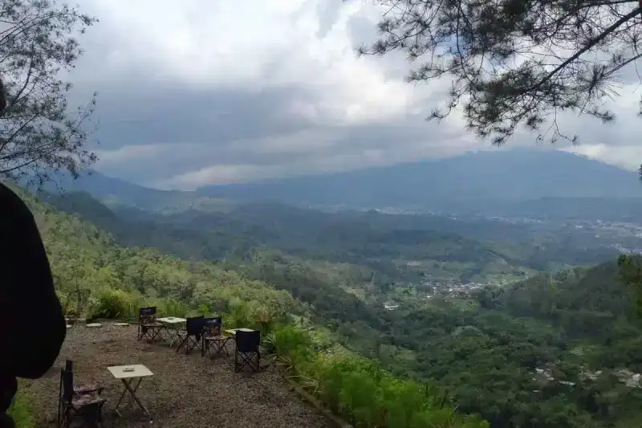

Rip current di pantai selatan adalah arus laut kuat yang bergerak menjauh dari bibir pantai menuju laut lepas dan dapat menyeret perenang dalam waktu singkat, sehingga wisatawan perlu mengenali cirinya sebelum berenang.
Ringkasan Inti
- Rip current terbentuk akibat pola arus balik air laut yang mencari jalur keluar melalui celah tertentu di antara gelombang pecah.
- Area dengan rip current biasanya terlihat lebih tenang namun memiliki arus yang justru lebih berbahaya dibandingkan sekitarnya.
- Instansi seperti BPBD dan kepolisian secara rutin mengimbau wisatawan pantai selatan mewaspadai rip current, termasuk di kawasan Malang, Bantul, dan Tulungagung.
- Mengenali ciri visual rip current membantu wisatawan menghindari area berbahaya sebelum turun ke laut.
- Jika terjebak rip current, tetap tenang dan berenang menyamping sejajar pantai menjadi langkah penyelamatan diri yang penting.
1. Apa Itu Rip Current dan Mengapa Berbahaya?
Rip current adalah arus laut kuat yang mengalir dari dekat pantai menuju laut lepas melalui celah di antara gelombang pecah, dan berbahaya karena dapat menyeret perenang menjauh dari bibir pantai dengan cepat tanpa disadari.
Fenomena ini banyak ditemukan di pantai yang menghadap laut lepas seperti Samudra Hindia, termasuk sepanjang pesisir selatan Jawa. Berbagai insiden wisatawan terseret ombak di kawasan pantai selatan, termasuk di Malang, Bantul, dan Tulungagung, kerap dikaitkan dengan pola arus balik semacam ini oleh pihak berwenang setempat.
2. Bagaimana Ciri-Ciri Area Rip Current di Pantai?
Ciri-ciri area rip current di pantai umumnya berupa permukaan air yang terlihat lebih tenang dibandingkan area sekitarnya, perbedaan warna air yang lebih keruh, serta busa atau puing yang bergerak menjauh dari pantai secara konsisten.
Beberapa tanda visual yang perlu diperhatikan wisatawan:
- Area air yang tampak lebih datar di antara gelombang pecah yang lebih besar di kedua sisinya.
- Perbedaan warna air, biasanya lebih keruh atau berbeda dari area sekitarnya.
- Busa, rumput laut, atau puing yang terlihat bergerak menjauh dari pantai secara terus-menerus.
- Celah pada barisan ombak yang tampak lebih tenang dibandingkan bagian lain.


3. Mengapa Wisatawan Sering Tidak Menyadari Keberadaan Rip Current?
Wisatawan sering tidak menyadari keberadaan rip current karena area ini justru terlihat lebih tenang dan aman dibandingkan area ombak besar di sekitarnya, sehingga sering dianggap sebagai tempat yang lebih nyaman untuk berenang.
Kesalahpahaman ini menjadi salah satu alasan utama mengapa petugas pantai dan instansi seperti BPBD terus mengimbau wisatawan agar tidak menilai keamanan laut hanya dari tampilan permukaan air, melainkan juga memperhatikan arahan petugas dan papan peringatan yang telah dipasang di lokasi.
4. Apa yang Harus Dilakukan Jika Terjebak Rip Current?
Jika terjebak rip current, langkah pertama adalah tetap tenang dan tidak melawan arus secara langsung, kemudian berenang menyamping sejajar garis pantai hingga keluar dari jalur arus sebelum berenang kembali ke tepi.
Langkah keselamatan yang dapat diikuti:
- Tetap tenang dan jangan panik meskipun tubuh terasa terseret menjauh dari pantai.
- Jangan melawan arus secara langsung karena hal ini hanya akan menghabiskan tenaga tanpa hasil.
- Berenang menyamping sejajar garis pantai untuk keluar dari jalur rip current, bukan melawan arus menuju pantai secara langsung.
- Berenang kembali ke pantai setelah merasa keluar dari jalur arus yang kuat.
- Berteriak atau memberi tanda meminta pertolongan kepada orang di sekitar atau petugas pantai jika kondisi tidak memungkinkan berenang sendiri.
5. Apa yang Sebaiknya Dilakukan Jika Melihat Orang Lain Terjebak Rip Current?
Jika melihat orang lain terjebak rip current, sebaiknya segera memberi tahu petugas pantai atau tim SAR terdekat dan menghindari upaya menyusul korban langsung ke laut tanpa alat bantu apung.
Menyusul korban tanpa perlengkapan yang memadai berisiko menambah jumlah korban, karena penolong juga dapat terseret arus yang sama. Melempar alat bantu apung seperti pelampung atau meminta bantuan petugas terlatih menjadi langkah yang lebih aman dibandingkan terjun langsung ke laut.
Rip current merupakan salah satu penyebab utama insiden wisatawan terseret ombak di pantai selatan, termasuk di kawasan Malang. Mengenali ciri visual arus balik ini serta memahami langkah penyelamatan diri dapat membantu wisatawan mengurangi risiko saat berwisata pantai. Untuk pemahaman lebih menyeluruh mengenai keselamatan di kawasan pantai Malang selatan, silakan simak peringatan keselamatan ombak selatan Jawa serta panduan persiapan wisata pantai di Malang sebelum berkunjung.
6. FAQ Seputar Rip Current
Abiyyu
Seorang penulis artikel yang sudah berpengalaman di dalam dunia wisata outbound Batu Malang.